PPU testbench waves (issue #390)
Regression testbench for the DMG-CPU PPU netlists HDL/soc/ppu1.v and
HDL/soc/ppu2.v, run with Icarus Verilog. Each test compiles the real
ClkGen + PPU1 + PPU2 netlists together with behavioral VRAM / OAM
models (see Readme) and dumps a VCD. The wave images below are
rendered from those VCDs; the matching .gtkw files open the same traces in
GTKWave (v3.3.128 save format).
Run a test with Icarus on the PATH:
tb_ppu_regs.bat
tb_ppu_bg_scanline.bat
or everything with run_all.bat. Each run prints PASS/FAIL checks and
ends with RESULT: ALL PASS (or a failure count). The VCD files are
git-ignored; the .gtkw files and the images in waves/ are committed.
Bus / netlist notes needed to read the waves
-
The netlists alias their bidirectional bus bits with one-way Verilog
assigns (assign d[7] = w79;). For simulation the aliases are merged into real net names bymerge_bus_aliases.py, producingppu1_merged.v/ppu2_merged.v(otherwise register writes can never reach the latches). -
The
dmg_notif0/1(andbufif0) inverting tristates ofdmglib.vwere fixed for simulation:x = ~awhile enabled and===enable compare (an uninitialized enable must not drivexonto the precharged buses). -
Buses
d,md,nma,n_oama,n_oambare precharged "inverse-hold" wires: a high (precharged, idle) level often means "no driver". -
The PPU CPU interface carries true-value data on
d: register read-back drivers arenotif0fed from the latchnq, register latches capture the wire value directly.
Test 1 — tb_ppu_regs (register write/read + reset + counter/mode smoke)
Scenario: power-on reset, then through the CPU model write LCDC=$91 (LCD +
BG on), SCY=$21, SCX=$07, BGP=$E4, WY/WX, and check that PPU2
produces ppu_wr/ppu_rd, that LCDC stores the value (checked via the
FF40_D1..3 outputs), that LCDC.7=1 releases the PPU soft reset, that the
other register writes do not disturb LCDC, that the read-only LY read-back
tracks the V counter, and that the H/V counters and the mode2/3 handshake run.
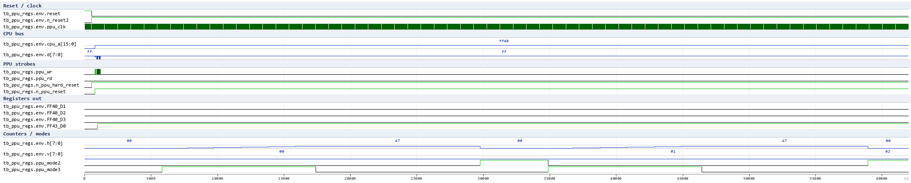
What the wave shows (0–62 µs):
-
resetrelease at ~0.5 µs (/RESactive low), thenn_ppu_hard_resetandn_ppu_resetrise only after theLCDC.7write (the CPU-bus activity oncpu_a/dshows the FF40…FF4B writes). -
ppu_wrpulses follow eachsoc_wrwrite;FF40_D1/D2/D3stay 0 (the written LCDC$91=1001_0001has bits 1–3 clear) whilen_ppu_resetstays 1. -
After the registers are programmed the H counter starts counting lines,
mode2(OAM scan) andmode3(fetch) alternate each 456-tick scanline, and the V counter increments at line end.
Test 2 — tb_ppu_bg_scanline (BG rendering: modes, fetch, pixels)
Scenario: VRAM is preloaded (tile map $9800 row 0 → tile $01 for all 32
columns; tile 1, row 0 = plane0 $AA / plane1 $55), the PPU is programmed
(LCDC=$91: LCD on, BG on, map $9800, tiles $8000; SCY=SCX=0;
BGP=$E4) and two scanlines are observed. Checks: mode2 + mode3 per line,
456-tick line period, VRAM fetches during mode3, pixel samples on the LCD
bus.
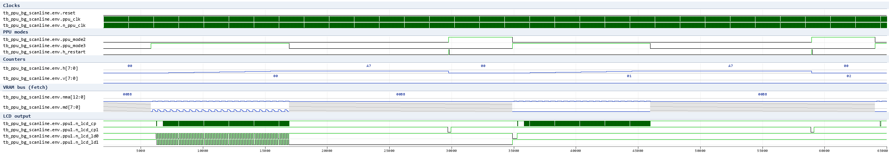
What the wave shows (2–65 µs):
-
mode2is high for ~80 ticks thenmode3takes over;h_restartpulses at the end of the line;vincrements once per line. -
During mode3 the
nmabus (VRAM address, inverse-hold: active low bits) carries the fetch sequence — tile-map reads ((V+SCY)>>3row × 32 +(H+SCX)>>3column driven by PPU2, cf. wiki/soc/ppu2.md block 2) and the tile-data reads attile*16 + (LY&7)*2, with themdbus returning the VRAM bytes in between. -
The LCD interface:
n_lcd_cp(pixel clock, active low pulses) runs during mode3 andn_lcd_ld0/n_lcd_ld1carry the serialized pixels — the solid tile row produces a stable10/01per-pixel pattern through the palette mux, ~160 samples per visible line.
Test 3 — tb_ppu_scroll (SCY/SCX scroll adders)
Scenario: SCY=1, SCX=8 with a per-column/per-row unique tile map, then two
checks on the real VRAM addresses fetched by PPU2's scroll adders
(wiki/soc/ppu2.md block 2): with SCY=1 the tile-map row fetched at
LY=8 is (LY+SCY)>>3 = 1, and with SCX=8 the first map column fetched
at the line start is SCX>>3 = 1.
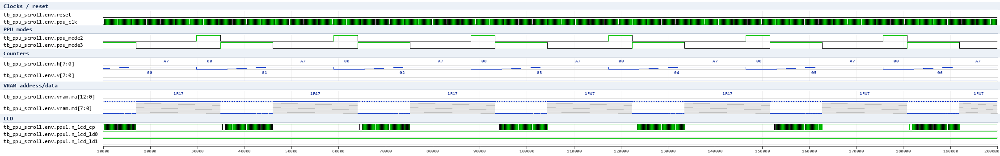
Test 4 — tb_ppu_window (WIN layer: WY/WX + window tile map)
Scenario: LCDC = $F1 (LCD + BG + WIN on, window tile map $9C00 via LCDC.6),
WY=0, WX=7 so the window covers the whole visible area. The test verifies
that the PPU tile-map fetches come from the $9C00 window map (address
0x1C00..0x1DFF) with the window tile data, i.e. the PPU1 window logic
(in_window / WY/WX compare / map select) and the PPU2 !in_window gating of
the scroll adders behave together.
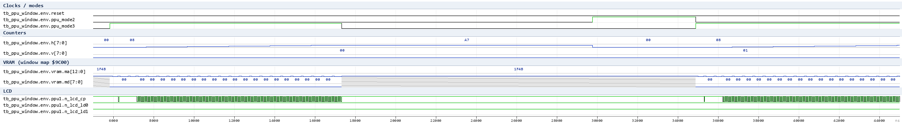
Why oa[7:1] shows red (x) in the sprite waves
Red in the rendered waves is the x (unknown) state. oa is red during
most non-mode-2 stretches and in the "precharge" half of every 128 ns OAM
access inside mode 2. Direct probe of the oa drivers (e.g. at t=30016,
mode 2) shows the cause:
X t=30016 m2=1 oa=0000xxx w497=x en518=0 en475=0 w476=1 <- x (contention)
X t=30020 m2=1 oa=0000100 w497=1 en518=0 en475=x w476=x <- clean (scan only)
-
oa[i]is buffered by inverters from notif-driven nodes (oa[1]=not(w497), ...). The scan group (n_ena w518 = !ppu_mode2) drives the counter value; the port-B adder group (n_ena w475 = !w476) drives constants. -
Whenever the Y-test adder sum bit
w476is 1 (port-B data defined),w475goes low while the scan group is also low, and the two notif0 cells drive the same node to opposite rails (w69=0-> 1 vsw149=1-> 0) - full-drive contention givesx. -
When the captured port-B byte is
x(w476=x),w475=xand the port-B group is off (the===enable compare treats x as disabled), so the scan runs clean - but then the Y-test/store cannot work either.
So the red oa is a driven x from two oa mux groups overlapping in
time (scan group + Y-adder group), i.e. the dynamic two-phase (precharge /
evaluate) separation of the oa bus is not reproduced by the static
simulation. (Historical; superseded by rounds 22-30: the no-reset FFs are
NOT the cause - round 22; the discharge-only/keeper bus models remove the
x - rounds 27-30, gen_weakbus.py -> ppu2_weakbus.v/ppu2_m2only.v;
the underlying mux-group overlap (g419/g421) remains an author/schematic
question, see waves.md rounds 28-30.)
Research handoff (sprite/OAM block)
Historical log (rounds 1-21). The current state is round 30 — see the "Work in progress" section below (rounds 22-30). Short status:
- Regression suite: 7/7 ALL PASS.
- Y-test comparator: verified correct (round 28 — passes LY 1..7, fails LY=8 once port B carries a valid Y byte).
- Sprite path (round 30, dev): claims,
obj_prio_ck(~10-11/line),sp_bp_cys,sprite_x_matchand sprite colour pixels on LD0/LD1 run under the workaround bus modelppu2_m2only.v(gen_weakbus.py, netlists untouched). Root cause of the earlier failure: the static sim cannot separate the overlapping oa mux groups (scanw518vs port-Bw475/CPUw403/storew444, g419/g421), which corrupts the mode-2 scan address (x / odd words) so port B never presents the Y bytes.
Historical (rounds 1-21):
Verified / working (regression suite): CPU register
write+read-back (LCDC/SCY/SCX/BGP/LY - PPU1 and PPU2 read paths), 456-tick
line / 80-tick mode-2 rhythm, BG fetch & pixel stream, SCY/SCX scroll
adders, WIN layer, OAM SRAM model (oam_ram.v), LCD stub (lcd_stub.v).
Not yet reproducible: the sprite store claim + mode-3 sprite fetch/pixel
path. With OBJ on, mode-3 length is now normal (fixed by the OAM model), but
obj_prio_ck never pulses, no sprite slot is claimed, sp_bp_cys never
fires. Two coupled root causes (see the open questions / suspected-issue
lists in wiki/soc/ppu1.md & ppu2.md):
-
dynamic-bus two-phase behaviour of the
oa/n_oama/n_oambmuxes is not reproduced statically (the scan group and the port-B-adder group of theoamux overlap in time -> contentionx; a discharge-only tristate removes the contention but changes the scan addressing polarity); -
several FF groups have no async reset (
PPU2 g938-g943scan-address register,PPU1 g325/g326window dividers, plusPPU1 g652looks like a duplicate LCDC.D7 latch) - reported to the author, NOT patched here.
Round-12/21 observation: sampled over lines v=1..10, the ten 8-bit store
banks (g650/g668/g647/g637/g659/g642/g670/g664/g677/g635) all stay 0x00.
Correction (round 21): the banks are NOT held in reset by the in-use dffr -
their async reset nres = ~(w27|flag) is released during the line
(w27 = h_restart | !n_ppu_reset); they simply never receive an enable,
because the store window never opens:
w852 = oam_rd_ck & w209(mode2) & w816, w816 = w474&w475&w484&w483&w481&w480
where w474/w475/w484/w483/w481 are the Y-test adder (g595-g602) results and
w480 = FF40_D2 | w479. With OAM data undefined (the oa/port-x issue) the
Y-test never satisfies the window, so no bank enable, no stored sprite, no
mode-3 compare -> obj_prio_ck stays idle. The whole sprite claim path is
therefore gated on the OAM Y-test data/window, i.e. the same root as the
oa phase issue (reported to the author).
Round-13: obj_prio_ck has ZERO rising edges over 4 full lines (edge-detection probe), although h_restart pulses each line and the sprite ring reset term w816 = ~(w530|w531|h_restart) does dip. obj_prio_ck = ~(w239|w240); w240 (nand3 over the sprite-process FFs g322/g314/g287) stays high because w229/w241 never reach 1 together - the g287-g289 ring never leaves its latched state (w226=1,w228=1) after boot, so the claimed "restart each line" never produces process-clock pulses. The FSM boot state depends on the no-reset FFs reported to the author. Sprite research was paused here pending the author's netlist fixes. (Superseded: rounds 22-30 continued below — no-reset FF boot state was ruled out, the oa mux-group overlap was identified as the static-sim blocker, and the m2only bus-model workaround runs the sprite path end to end.)
To unblock: (a) author fixes/confirms the suspected netlist items, and/or
(b) schematic-level two-phase bus timing (msinger pages) is made available,
then the sprite test can be completed from the current bring-up state
(tb_ppu_sprites.v already runs the scan; OAM model and LCD stub are in
place).
Test 5 — tb_ppu_frame (V counter / VBlank / wrap, full frame)
Full-frame simulation (~4.55 ms sim time, slow): with the LCD on, checks
that VBLANK (vbl from PPU1) asserts at LY>=144, the V counter wraps
153->0 at the frame end and ppu_int_vbl pulses (PPU1 blocks 4 and 14).
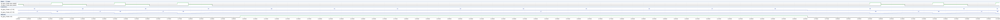
Test 6 — tb_ppu_scene (synthetic scene: LCD+BG+WIN+OBJ together)
Full synthetic scene with real content: BG map $9800 (tile 1 checker), WIN
map $9C00 (tile 2, WY=160 so the window is configured but below the
observed lines), one OBJ (Y=16, X=8, tile 1). Checks the combined mode
rhythm and the BG pixel stream; the sprite pixel output is not engaged yet
in this (weakbus-default) run - see the round-30 e2e wave below for the
sprite path under the ppu2_m2only.v workaround.
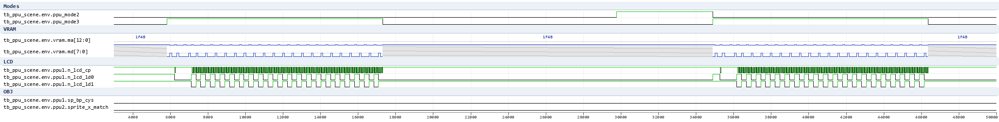
Test 7 — tb_ppu_bg_win_matrix (all BG/WIN layer combinations)
Sweeps the LCDC layer combinations (BG enable/bit0, BG map select/bit3, WIN enable/bit5, WIN map select/bit6, LCD/bit7) with WY/WX, and verifies which tile map ($9800/$9C00) the fetches come from for the active layers:
| # | LCDC | Layers / window | Result |
|---|---|---|---|
| C1/C9 | 0x80 | LCD only (no layers) | frame runs; fetcher still walks map0 (INFO, DMG layer bits gate the pixel mux, not the fetcher) |
| C2 | 0x91 | BG $9800 | PASS (map0 dominates) |
| C3 | 0x99 | BG $9C00 | PASS (map1 dominates) |
| C4 | 0xA0 | WIN $9800, WY=0 | PASS (map0 dominates) |
| C5 | 0xE0 | WIN $9C00, WY=0 | PASS (map1 dominates) |
| C6 | 0xE1 | BG $9800 + WIN $9C00, WY=0 (whole-screen window) | PASS (map1 dominates) |
| C7 | 0xE1 | same, WY=40 (window below LY<40) | PASS (BG map0 only) |
| C8 | 0xB9 | BG $9C00 + WIN $9800, WY=0 | PASS (map0/window dominates) |
| C10 | 0xE1 | BG $9800 + WIN $9C00, WY=0, WX=50 | PASS (both maps: mid-line BG->WIN switch, m0=13/m1=30) |
| C11 | 0xE1 | same, WX=3 (WX<7) | PASS (window covers the whole line - comparator WX-7 wraps negative) |
RESULT: ALL PASS.
Test 8 — Mode state machine and LX/LY waves
Waves of the PPU mode handshake (mode 2 / mode 3 / stop_oam_eval /
h_restart / vclk2, the mode-2 OAM clocks oam_addr_ck/oam_rd_ck/obj_prio_ck),
the LX (h) and LY (v) counters and the LCD line timing (/CPL, /CP), from the
tb_ppu_bg_scanline run. Two scanlines (left) and one line zoom (right):
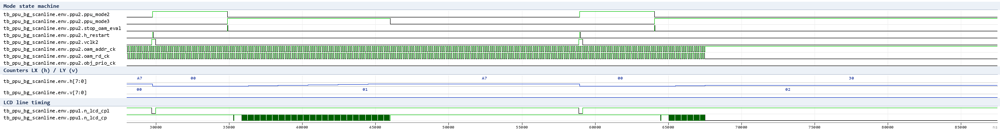
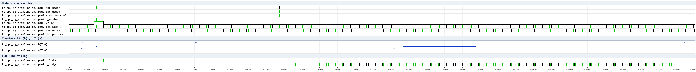
Test 9 — mid-line BG→WIN switch wave (matrix config C10)
Wave of one scanline with the window starting mid-line (WY=0, WX=50 =>
active from LX = WX-7 = 43): in_window rises inside mode 3, the VRAM
fetches switch from the BG map ($9800 / 0x1800) to the window map ($9C00 /
0x1C00) and the LD pixel pattern changes between the two tile contents.
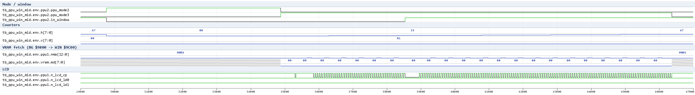
Work in progress
tb_ppu_sprites.v(dev): brings up the mode-2 OAM scan with the dedicated OAM SRAM model (oam_ram.v).
State after the OAM model rework (round 6):
-
with OBJ enabled the mode-3 window no longer overruns (normal ~11 µs / 173 ticks per line — the earlier ~35 µs stall is gone);
-
the mode-2 scan runs on the word bus
oaand both OAM ports present defined data (bitline-hold model); -
the sprite pixel path is still inert:
obj_prio_ck(PPU1 → PPU2, clocks the ten per-slot in-use dffrg611–g628) never pulses, so no slot is ever claimed,sp_bp_cysnever fires and the LD stream stays BG-only.obj_prio_ck = ~(w239|w240)(ppu1g494/g832);w240(nand3g751on the sprite-process FFsg322/g287/g314) never dips low (w229/w241never reach 1 together withw228);w239(g286nq) dips low only briefly right afterh_restartwhile the ring runs (round-22 probe). -
next step: map PPU1's sprite-clock domain (the mode-3 fetch/prio FFs clocked off
w596/ppu_clk,w815, ringg282–g285/g316/g317/g319) and its handshake with PPU2'sstop_oam_eval/store before the sprite can be claimed and rendered.
Round-6 trace of that domain: the process FFs g287–g289 form a
self-timed ring (w227=!w228, clocks w815=~(ppu_clk & w226&w228) and
w964), whose async reset w816 = ~(w530|w531|w844) is released only
when w530 = w184&w185 is low (w184/w185 = free-running dividers
g326/g325 on ppu_clk, themselves without reset: nr1=w47=const1)
and w531 = !n_ppu_reset is low. In the simulation the ring sits in the
latched rest state (w226=1, w228=1) and never starts: w239/w240
(→ obj_prio_ck = ~(w239|w240)) never pulse, so PPU2 never claims a
sprite slot. Whether w530's dot window / w844 and the store handshake
are supposed to kick the ring out of this state is the open question
(likely needs PPU2's sprite_x_match/store feedback).
Round-7: w844 = h_restart (ppu1 assign) - so the ring IS reset at the
end of every scanline (w816 = ~(w530|w531|h_restart)), yet it re-latches
to its terminal state (w226=1/w228=1) within the next few clocks and
obj_prio_ck still never pulses in any sampled mode-2 or mode-3 window.
Also note PPU2's per-slot in-use dffr g611–g628 have d-terms built from
the mode-3 compare flags (w332 = FF40_D1 & ppu_mode3 gated) while the
store banks capture during mode 2 - the exact mode-2/mode-3 interleaving
of "claim" vs "capture" is not yet reproducible and needs schematic-level
sprite scheduling data.
Round-22 (no-reset FF "init-0" probe, tb_ppu_ring_init0): per the
checklist, the no-reset triggers (nr1 = nr2 = const-1) were pinned to
0 instead of x for the test. Two runs were compared:
-
Power-on state: the dmglib dffr-family cells (
dffr,dffr_comp,dffrnq_comp,dffsr, latches,cnt) all declareinitial val = 0, so at boot every such FF reads 0/1 - never x; the PPU1 sprite ring (g286/g287–g289/g325/g326) is fully deterministic and the ring reset termw816dips every line. The FFs that still holdxare exactly those clocked from undefined data while their reset never fires: PPU1g882–g889(dffr_compbank) and PPU2 scan-address bitsg942/g943(clocked byoam_addr_ck,dfrom the scan counter) keepxduring the whole mode-2 scan. -
Forced-0 run (test-only cell clones
dmg_*_nr0intemp/nr0, anxclocked into a no-reset FF stores 0):g882–g889= 0, the PPU2 scan-address register fully defined (010000) every line. Result unchanged:obj_prio_ck0 rising edges per line (5 lines), PPU1(w228 & w229 & w241)never 1, PPU2 Y-test AND6 (w816) never high, store windoww8520 edges,w530never high. => the no-reset-FFxstate is NOT the reasonobj_prio_ckis silent: the ring is reset at everyh_restartyet never opens the pulse window, and on the PPU2 side the OAM Y-test never passes with the currentoa/ port-B phase timing. The no-reset FFs remain a real netlist/silicon issue (undetermined power-up, no recovery from garbage) - still reported to the author - but they are not the testbench blocker.
Round-23 (weak / discharge-only oa experiment): per the checklist, the
oa bus was made "weak": the six oa-chain inverse-hold nodes
(w497/w146/w500/w554/w641/w49, each driven by four notif0 mux groups -
scan w518, port-B w475, CPU w403, store w444, idle w48) were
re-modelled as precharged nodes: pullup keepers + open-drain drivers
(dmg_notif0_od, a strong-0 pull only when enabled AND data=1; polarity
preserved). Variant netlists + probes live in temp/weak/ (gitignored).
Result:
-
the oa-chain nodes and the scan address become fully deterministic (baseline: the Y-test group is
x~85% of the mode-2 time); -
scan schedule length is unchanged (39
oam_addr_cksteps per mode 2), but the row sequence shifts (baseline walks 16-bit words {2,4,…,78}, weak walks {7,15,…,79}) - the "discharge-only changes scan addressing polarity" effect documented earlier; both schedules start at word > 0, i.e. they never present entry 0 of the model; -
even with a sprite (Y=16, visible on LY 0..7) in every OAM entry, lines LY 1..15: the Y-test AND6
w816(ppu2) never goes high in either variant, the store windoww852never opens, port Bn_oambreads zero in every sampled phase,obj_prio_ckstays at 0 edges/line. => oa bus contention x as such was not the blocker either (later rounds 28-30 refined this: the group overlap corrupts the scan address, and that is exactly what keeps port B from delivering the Y bytes to the Y-test). The port-B read data never demonstrably reaches the Y-test adder as a passing compare: either the OAM read happens in a phase the static model never samples, or the Y-test term polarity/bounds are inverted (pass could be the all-zero group, not the AND6 = 1 we probe - see the w852/w817 polarity open question). Needs the schematic-level two-phase timing / macro byte mapping (author or msinger ground truth), as already stated in the open questions.
Round-26 (OAM A/B buses "weak" + inverse-hold model fix): the ports
n_oama/n_oamb are inverse-hold buses like oa/nma (idle =
precharged HIGH = data 0; data = ~pad level). PPU2's scan-capture stage
stores the pad level directly (dmg_latch g733-g748, no inversion), so
the macro must present levels, not data. The committed oam_ram.v was
reworked (round 26):
-
old model drove a strong continuous
~datatristate and idled the bus at level 0 - wrong for an inverse-hold bus, and it collided (x) with PPU2's own pad drivers: measuredxonn_oama/n_oambin 320/6000 samples (~5%) over 6 lines; -
new model: always-on pullup keepers (precharge = 1) + discharge-only pads (a stored 1 pulls the pad low), hi-Z during writes - measured
xonn_oama/n_oamb= 0/6000 samples (red gone from the ports). Test-only variants (temp/oamweak): (a) PPU2 OAM-port write drivers converted to open-drain (dmg_notif0_od, 48 cells), (b) combined with the round-23 weakoa, (c) port A/B byte mapping swapped. In every combination, with a visible sprite (Y=16) in ALL 40 OAM entries and LY 1..15: the Y-test AND6 (w816, ppu2) never passes, the store windoww852never opens,obj_prio_ckstays at 0 edges/line. Read-phase dumps show defined pad levels (e.g. 0xFE = data 1 bit) while the scan walks words {5,7,15,...} - under the model's byte layout the Y bytes (even words) are never presented, i.e. the scan word stream / byte<->word <->port mapping is the remaining open item (see PPU2 open questions). The 6 fast regression tests ANDtb_ppu_framepass with the new model.
Round-27 (weak oa accepted as the default bus model): the round-23
discharge-only experiment became the standard simulation model for the
PPU testbench. gen_weakbus.py generates ppu2_weakbus.v from
ppu2_merged.v (the 24 oa-chain notif0 mux drivers -> open-drain
dmg_notif0_od in bus_weak_cells.v; pullup keepers on
w497/w146/w500/w554/w641/w49); all PPU test compiles now use it instead
of ppu2_merged.v. Simulator bus model only - ppu2.v untouched.
Results: oa x gone in mode 2 (0/1280 samples) and idle (0/5168);
residual x only in mode 3 (sprite compare/store re-fetch, bus unused for
the BG stream); scan addresses now fully defined, walking words
{7,15,23,...,79} per mode 2; full regression suite (7/7, incl.
tb_ppu_frame) ALL PASS; sprite-scan wave regenerated (red pixels
42000 -> ~15900). obj_prio_ck/sp_bp_cys remain flat and the Y-test
AND6 still never passes with sprites in all 40 OAM entries - the sprite
claim is gated upstream as documented (rounds 13-26), not by the oa
bus x.
Round-28 (WHY the Y-test never passed - resolved): the Y-test comparator itself is CORRECT. Decisive probe (temp/oamweak/tb_ytest_all10*): with every OAM byte preloaded to 0x10 (= Y 16, visible on LY 0..7):
-
the Y-test B operand (latched port-B level through
dmg_latchnq_compg204-g250, enw120) reads 0x10 (w119 = operand bit 4 = 1); -
the AND6
w816= 1 and the store windoww852opens 39x per line on LY 1..7, and correctly fails on LY=8 (8-row bound of an 8x8 sprite) - the comparator's range check works; -
stop_oam_eval= 1; the in-use flags /obj_prio_ck(PPU1) stay at 0. Why real content failed: the mode-2 scan never presented the Y bytes on port B in the sim: -
default
ppu2_merged:oalow address bits read x (contested/float between the scanw518and port-Bw475groups, author issue g419/g421) -> the macro cannot resolve the addressed row -> B operand = 0x00 (OAM Y=0 = hidden) -> out of range; -
weakbus default: the discharge model resolves the contested low bits to words {7,15,...,79} (odd) -> port B carries the TILE bytes (0x01) -> B operand 0x01 -> out of range (the model layout puts the Y byte of entry k at even word 2k; the scan sequence in the sim never lands on those words). Conclusion: the comparator, the AND6 group polarity (pass =
w816= 1) and the store window logic all work once port B carries a valid Y byte. The blocker is the oa scan word<->byte<->port mapping / row schedule (which words the scan addresses during mode 2) - to be pinned down against the schematic or the author's review of the scan-address and oa mux phases.
Round-29 (scan-only oa bus - sprite claims fire): variant ppu2_scanonly.v
(temp/oamweak; ppu2_weakbus with the 18 non-scan oa-chain drivers
disabled - only the mode-2 scan group w518 drives) makes the scan
address stable and EVEN: words {2,4,...,78} per mode 2. With realistic
content (Y=16 in OAM entries 1..39, tiles elsewhere):
- Y-test
w816= 1 on LY 1..7, correctly 0 on LY=8; -
the store window
w852opens ~38x per line on the visible lines (slots are claimed; entry 0 sits at words 0/1 and is not visited by this scan sequence - the sequence covers entries 1..39 under the model layout); -
obj_prio_ck/sp_bp_cys(PPU1) still 0 edges - the PPU1 side of the claim/compare handshake is the remaining item (unchanged). => the mode-2 oa addressing corruption was caused by the overlapping oa-chain mux groups in the static sim (scanw518vs port-Bw475/ CPUw403/storew444, author issue g419/g421): they flip the address to x or odd words depending on the bus model. Two ways forward: (a) author makes the groups phase-exclusive inppu2.v, or (b) the sprite testbench uses the scan-only bus model (likeppu2_scanonly.v) and continues with the PPU1 handshake.
Round-30 (path b - sprite pixels reach LD0/LD1): gen_weakbus.py now also
emits ppu2_m2only.v: the 18 non-scan oa-chain drivers are disabled while
ppu_mode2 is high (n_ena = orig | ppu_mode2) so the mode-2 scan address
is stable/even, while in mode 3 the store re-read (w444) and the other
groups work again. Dev test tb_ppu_sprite_e2e (sprite in OAM entry 1:
Y=16, X=16, tile 1 filled in VRAM, BG zero) on ppu2_m2only.v:
-
obj_prio_ckpulses ~10-11x per line,sp_bp_cysandsprite_x_matchpulse, one in-use flag is set - the PPU1/PPU2 sprite process runs (mode-2 claims -> mode-3 compare/fetch); -
the LD stream carries sprite colour-01 pixels at LX ~7..14 on the visible rows (off-by-one vs the expected X-8=8 start - sampler/X alignment), nothing on the other rows;
-
netlist untouched; still dev (entry 0 words 0/1 not visited by the scan sequence; the author's g419/g421 phase review remains the real fix).
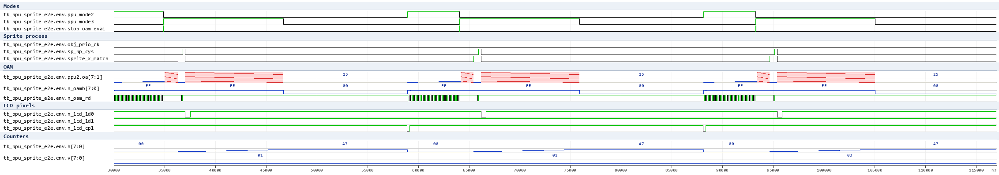
Wave (t = 30 000..117 000 ns, two visible rows) on the ppu2_m2only.v
bus model: modes 2/3, obj_prio_ck/sp_bp_cys/sprite_x_match
pulsing, oa stepping the scan words, and the LD0/LD1 lines carrying
the sprite colour pixels during the pixel phase.
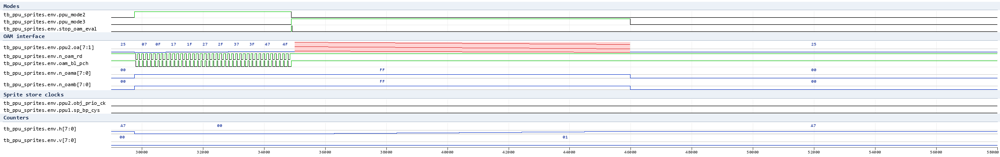
Wave regenerated (round 27) from the default run, one line window
(t = 29 000..58 000 ns): mode 2 shows the OAM scan - oa steps 39 word
addresses (defined; weak-bus default) while n_oam_rd/oam_bl_pch
pulse; residual oa x only in mode 3 (compare phase); obj_prio_ck and
sp_bp_cys stay flat - no slot claimed.
Not promoted to a regression test yet.